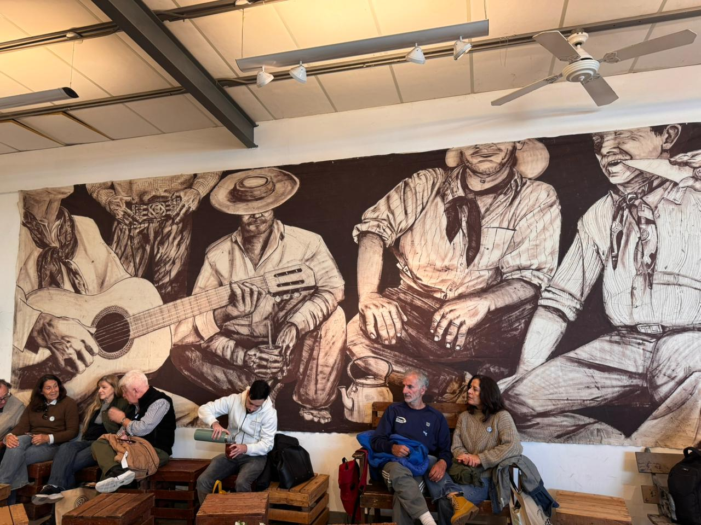
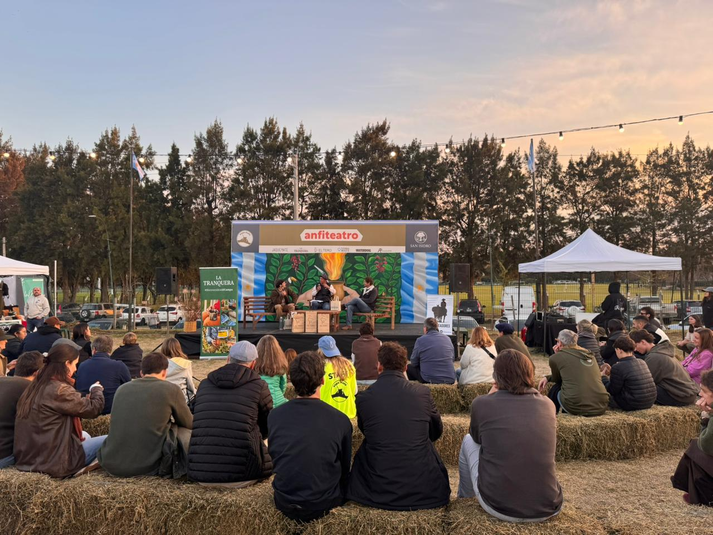

Llegamos al Hipódromo de San Isidro una tarde del 25 de mayo. Frío, algo húmedo, ese tipo de día que en cualquier otro contexto invitaría a quedarse en casa con una manta. Pero el clima no fue obstáculo: la Expo Mate 2026 tenía sus puertas abiertas y adentro, Argentina entera parecía haber decidido festejar.
Porque si hay algo que la fecha sumó a la experiencia, es una capa de significado extra. Ir a la Expo Mate un día patrio no fue casualidad —fue poesía. La infusión más argentina, celebrada el día más argentino. Muchas personas lo entendieron así: abundaban las escarapelas en las solapas, los pañuelos celestes y blancos, y una actitud colectiva de disfrute genuino que no se fuerza.
El ritmo de la chacarera
A poco de entrar, una banda en vivo tocaba chacarera. No había escenario imponente ni luces de producción: solo músicos, el sonido limpio que recorría el predio —el audio funcionó de diez durante toda la jornada— y gente que no necesitó más invitación para ponerse a bailar.
Niños, adultos, parejas, abuelos. Todos en ronda, todos moviendo los pies. Esa imagen —la de generaciones distintas bailando juntas bajo el frío de mayo— fue quizás la más representativa de lo que la Expo Mate logra cuando está en su mejor versión: no vender un producto, sino convocar una identidad.

Degustaciones: el mate como experiencia
La propuesta principal de la expo era clara: recorrer los stands y probar. Las distintas marcas de yerba ofrecían degustaciones —sí llevabas tu mate, algo que recomendamos fuertemente para vivir la experiencia completa— y así uno podía ir comparando sabores, intensidades, texturas. Un recorrido sensorial que no tiene equivalente en ninguna góndola de supermercado.
Pero la Expo Mate es mucho más que yerba. El mundo de los accesorios tenía su propio universo: materas, yerberas, termos, bombillas, mates de todos los materiales y estilos. Y también cuero: ropa, marroquinería, piezas trabajadas a mano. Los precios sorprendían gratamente —materas entre $60.000 y $200.000— en un contexto donde esos valores resultan más que accesibles para la calidad que ofrecen.

"Nada de lo que hacemos es pensado"
Entre los stands, uno en particular llamó la atención: Patrón (patron.cosasdecampo), una talabartería para chicos que nació, como tantos buenos proyectos, de una necesidad concreta. Luli, su dueña, nos recibió entre sweaters, camisas, cinturas de cuero y bombachas de campo en talle bebé.
"Este año superó el triple lo que fue el año pasado. Fue espectacular."
— Luli, dueña de PatrónNo es su primera Expo Mate —el año pasado también estuvieron— pero esta edición los encontró con una presencia mucho mayor. Y la historia de cómo llegaron hasta acá es tan argentina como la feria misma.
"Yo tengo tres chiquitos y cuatro sobrinos, todos de la misma edad", cuenta Luli. "Empezamos haciendo bombachas de campo para ellos, y de repente nuestros amigos y conocidos nos empezaron a pedir. En un momento dijimos: che, empecemos con el emprendimiento."
De esas primeras cincuenta bombachas de campo, Patrón creció hasta tener una colección completa: sweaters, remeras, pantalones, jeans, chalecos y cinturas de cuero. Todo para niños, todo producido con artesanos conocidos, todo con materiales locales. El cuero, por ejemplo, es de burro: lo caza un amigo de Luli, lo cura, y se los entrega. Una cadena de producción que empieza y termina en personas reales, con nombres y caras.
"Nada de lo que hacemos es pensado. Son todas cosas heredadas. Hacemos facones de madera porque yo, cuando era chiquita, jugaba con palos como si fueran facones."
— Luli, PatrónEl proyecto nació, nos explica, de la ausencia. "No encontrábamos, desde una bombacha de campo de buen gusto y calidad hasta un chalequito de cuero para nuestra chiquita." Empezaron a fabricar en base a las necesidades que iban teniendo, y cuando tuvieron todo armado fue que recién se animaron a pensar en el emprendimiento.
Una feria que celebra lo nuestro
Al salir del predio, con el atardecer cayendo sobre San Isidro y el sonido lejano de otra chacarera, quedó una sensación difícil de articular en palabras. La Expo Mate no es solo una feria de yerba: es un espacio donde Argentina se reconoce a sí misma, donde la tradición no es un museo sino algo vivo, que se baila, se prueba, se vende y se comparte. Un lugar donde tiene sentido llegar un 25 de Mayo con escarapela.